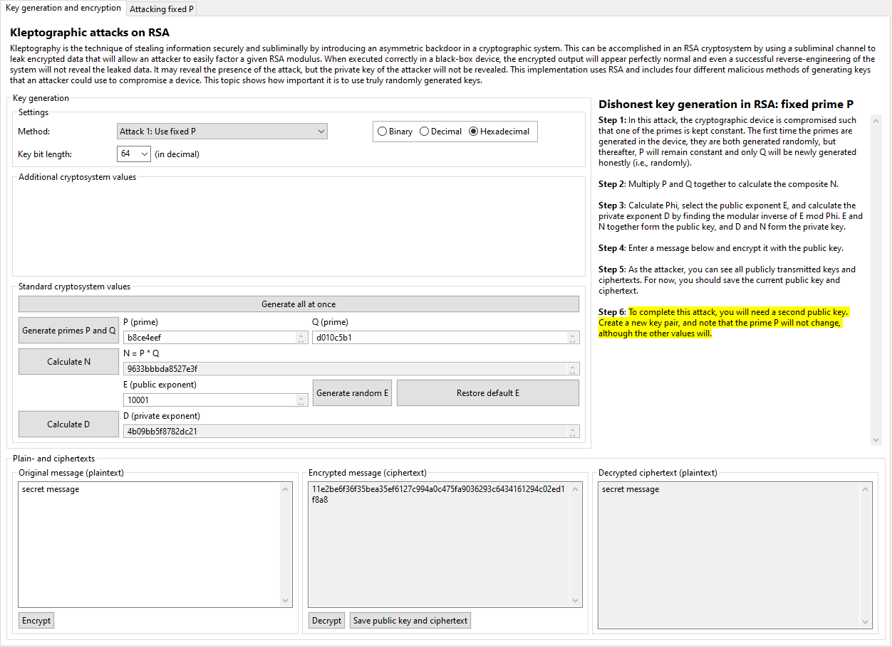
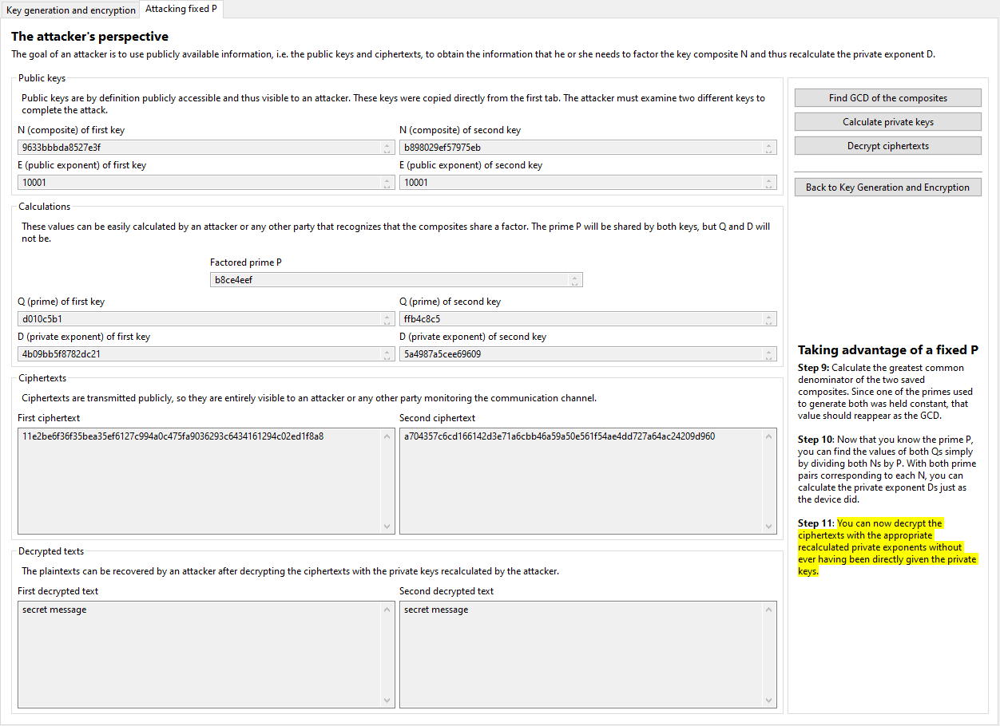
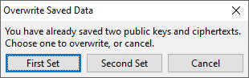
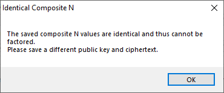

Ostensibly, the interface of the fixed P attack looks similar to that of the honest key generation. However, you should see an extra "Save public key and ciphertext" button at the bottom of the display (next to the "Decrypt" button) and a new tab located at the very top of the display, labeled "Attacking fixed P":
We will return to these two peculiarities shortly. First, we will explain the idea behind this attack, which is adapted from Subsection 11.2.1 of [YY04]. The idea is simple: one of the primes used in the cryptographic device to generate keys is kept constant. To a casual observer, nothing will appear to have changed, since the primes are never seen by users, and the public and private keys will continue to appear random due to the random selection of the other prime. However, the attacker merely needs to find two different public keys generated by the device and then to find the greatest common denominator of the composite N values of the keys. That value will be the prime P, and then the second prime Q can be calculated by dividing N by P, and since the public exponent E is already known (it is, after all, public), D can be calculated just as it was in the device.
The problem here is that anyone can do this, not just the attacker that designed or altered the cryptographic device to behave in this way. Hence, any observer that notices that the composite N values generated by the device have a common factor can reproduce the attack themselves. Because this attack is so easily detected and easily reproduced, the implementation is essentially completely compromised.
For this algorithm, you can simulate the role of an attacker or curious observer. Once you have encrypted some text (regardless of whether you have simulated the receiver and decrypted it with the private key), you can use the "Save public key and ciphertext" button to save the ciphertext and the public key used to encrypt it, since both of these are transmitted publicly and available to any person monitoring outgoing communication. You should then repeat the steps of generating a new key pair (in which the prime P will be automatically held constant) and use the new public key to encrypt a second text, which you should again save. The display will automatically bring you to the "Attacking fixed P" tab:
On this tab, you will see both of the ciphertexts and public keys that you saved from the first tab. At this point, you are fully simulating an attacker or observer, and you can find the greatest common denominator and thus the private keys as described above. With the reproduced keys you can then decrypt the saved ciphertexts and check if the attack worked as planned.
Note that if you go back to the first tab (the "Key generation and encryption" tab), you can then generate another new key and ciphertext and save them, in which case the program will ask you to choose one of the existing saved keys and ciphertexts to overwrite:
Also note that if you save two ciphertexts generated with the same public key, the attack won't work; the composite N values will be identical and the greatest common denominator will be that same number, not the constant prime P. The program will warn you of this if you attempt it:
Click here to return to the kleptography index or here to continue to the next page (generating P via a pseudo-random function).
[YY04] A. Young, M. Yung, Malicious Cryptography: Exposing Cryptovirology, John Wiley & Sons, 2004.